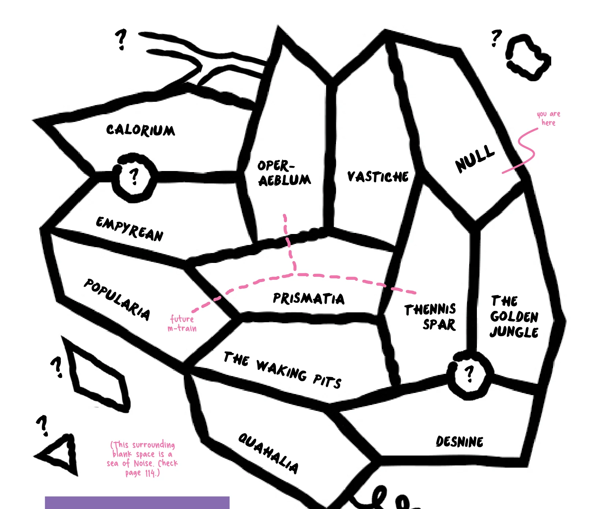

Eure Welt – ein unscheinbarer Vorort, in dem DARA eine Forschungsanlage für Teilchenphysik gebaut hat.
HeimatS. 80Ödland nach dem Chemiekrieg. Bröckelnde Parkhäuser, verblasste Plakatwände und eine verlassene Megamall unter Dünen aus rosa Sand.
MaskeS. 96Eine geschäftige, exotische Utopie-Stadt. Man handelt Oliven und Gewürze im Forum, diskutiert das Multiversum in uralten Tempeln und ignoriert die Geister.
CIVS. 97Ein unendlicher Ozean, Wasser, wo der Weltraum sein sollte. Die gläsernen Gänge einer verlassenen Beobachtungsstation winden sich um einen Korallenmond.
S. 100Die Ruinen einer Hochkultur, überwuchert von dichtem, funkelndem Regenwald. Ausgemusterte Gundams schlafen unter Moosdecken.
S. 101Die Ebene des Lichts. Kein Himmel, kein Boden, kein Oben, kein Unten.
S. 104Drei verfeindete Konzern-Megatürme, verbunden durch verschlungene Fußwege und Skytrains. Raves, Androiden, Spiegelbrillen.
CIVS. 105Die Ebene des Feuers. Seltsame Luftschiffe treiben auf Aufwinden, Flamingos versammeln sich in kochenden Limoseen.
SchutzanzugS. 106Kalte, dunkle Hölle. Eine gefrorene Landschaft aus zerfallenden Burgen und Friedhöfen.
S. 109Der Ort, an dem man sein muss. Künstler, Influencer und Models bevölkern die Cafés, Clubs und Skateshops.
CIVS. 110Unberührtes Paradies. Geflügelte Hirsche trinken aus Bächen. Vorsicht bei den Beeren.
LogikbinderS. 111